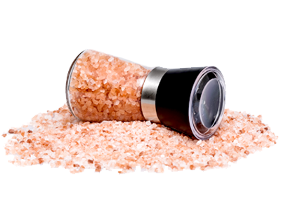

PRODUCTS Offered

Bringing the finest Himalayan Pink Salt from the mountains of India and Pakistan to your table. The beautiful pink color, rich variety of trace minerals, and variety of grain sizes ensure the ideal option for any day—from on the table, to baking, to a simple grind. From deep within the Himalayas, this versatile salt will take you from breakfast eggs to steak dinner.
We offer different varieties such as (Alphonso, Himsagar, Kesar, Langra, Anwar Ratol and many more!) of mangoes from the fresh and delicious mango orchads of India, Pakistan, Sri-Lanka and Nepal.